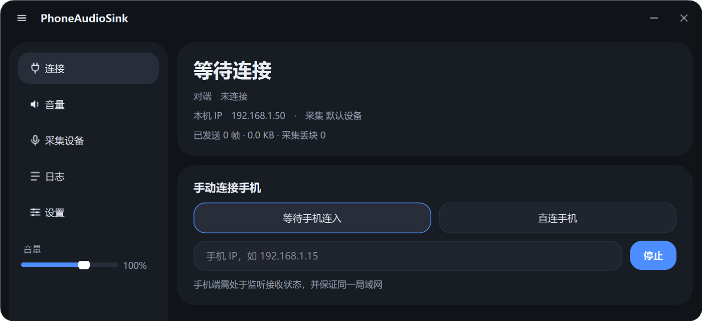
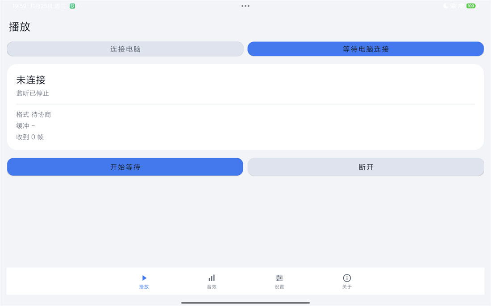
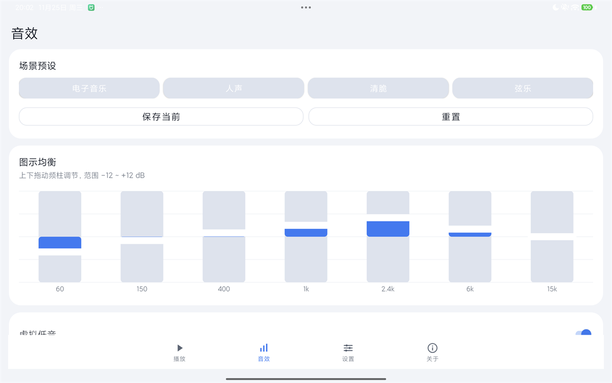

系统声音直采
取 Windows 默认播放设备，不用装虚拟声卡；本机耳机、扬声器不受影响，播什么送什么。



截图来自平板横屏；手机上仍是底部四页布局，窄屏自动单列。
采集、编码、发现、播放，每段只解决一件事。
取 Windows 默认播放设备，不用装虚拟声卡；本机耳机、扬声器不受影响，播什么送什么。
48kHz、双声道、960 样本一帧（20ms），64kbps。帧短包小，链路抖动更容易压住。
UDP 42100 广播一问一答，电脑名直接进列表；扫不到再手输手机 IP 直连。
同一枚图标、同一套蓝。桌面汉堡侧栏，安卓底部四页；圆角和间距按各自平台走，不强行照搬。
波纹和按压按刷新率排帧，120Hz 约 8ms 一帧；设置里可关减弱动态效果。
未连接、监听已停止、掉线、采集丢块都有对应显示；发现不到时手输 IP 即可连上。
两端源码、协议字段、图标生成脚本和自检工具都在仓库，可改可二开。
两个端口、五种类型，二进制定长头，读源码五分钟能看完。
桌面 PyQt5，安卓 Kotlin + 原生 AudioTrack，不依赖特殊硬件。
git clone https://github.com/Bobo0925-a/PhoneAudioSink
cd PhoneAudioSink/pc
pip install -r requirements.txt
python desktop.py单文件打包：python -m PyInstaller PhoneAudioSink.spec。
cd android/PhoneAudioSink
gradle assembleDebug
adb install -r app/build/outputs/apk/debug/app-debug.apk需要 JDK 17 和 Android SDK；包名 com.example.phoneaudiosink。